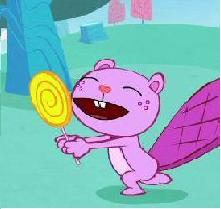
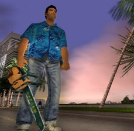

Tommy Vercetti
 De: La Frikipedia, la enciclopedia extremadamente seria.
De: La Frikipedia, la enciclopedia extremadamente seria.

|
PELIGRO
Este artículo o sección no es más que una torpe lista. Si crees que vale la pena, edítalo para mejorar su calidad y excelencia
|
De la serie grandes personajes:
¡Ten piedad de nosotros Tommy!
| Nacimiento
|
Inesperado
|
| Muerte
|
Él es la muerte.
|
| Ocupación
|
Mafioso de camisa hawaina
|
| Nacionalidad
|
Gringo
|
| Malo o bueno
|
Dios
|
| Atentados contra la humanidad
|
Clonar a tony montaña (con todo y camisa y nombre),acabar con la raza humana. (buenooo, prácticamente...quisquilloso)
|
| Religión
|
Tommycista
|
| Notas
|
La pistola forma parte de su cuerpo
|
Tommy Vercetti es el personaje protagonista del juego GTA Vice City.
Biografía
Nació por el cruce de su hermana con un wombat. Vivió en su día en Liberty City, donde se formó y estudió Humanidades (como todo hijo de vecino) y aprendió a manejar todo tipo de armas.
Es además un reconocido miembro de la Asociación de Adictos a los Tranquilizantes, donde se des-estresa de su vida de asesino a sueldo.
Su obra
Entre la variedad, destacan:
- Controlar la ciudad de Vice City.
- Controlar Mocosoft
- Controlar Apple
- Producir galletitas saladas cancerígenas.
- Deportar inmigrantes en masa, siendo este un immigrante
- El que escribió esto fue asesinado por Tommy con una motocierra
- Matar al jefe de los haitianos.
- Regalar armas a niños y ancianas.
- Acabar con la vida de multitud de mafiosos.
- Provocar una catástrofe urbana cada vez que sale a la calle.
- Liquidar a Dios sabe cuántos civiles.
- Ser el "guardaespaldas" de una banda transexual
- Controlar el negocio de la droga en Vice City mediante la venta de helados.
 Tommy a veces se cansa de matar y decide ver series educativas - Ser el jefe de una empresa de taxis que te matan cuando te dejan en tu destino.
- Ser amigo de éste.
- Instalar en TVE Los Lunnis, que pretenden crear un ejército a su disposición.
- Provocar infinidad de gastos diarios a la policía de la ciudad.
- Honrar la palabra “muerte”.
- Controlar multitud de negocios como el Telepizza y Lada.
- Trabajar para mafiosos y luego matarlos para quedarse con sus pertenencias.
- Crear un paraíso fiscal en Vice City del que se inspiró el tío ese de Polaris World.
- Hacer explotar un edificio con un helicoptero de juguete.
- Ganar carreras de autos contra sus enemigos.
- Asaltar un banco con una mascara de hockey y salir pintado.
- Matar a todos los abitantes de la ciudad y aun estar libre sin nigun cargo
- Aber destruido 3 barcos, 1 auto y 7 cubanos con solo 3 aviones de jugete
- Quejarse de matar a 11 personas en Liberty City cuando el mato a 2 millones y medio de personas en Vice City.
- Poder sobrevivir al ataque de 2000 mafiosos, cubanos, haitianos, etc. pero ser tan gilipollas que al caerse al agua se muere por no saber nadar.
¿Sabías qué…
 Tommy de Bricomanía.
¿Me haces una casita pa los pájaros, nene? - Tommy existe de verdad? Estais leyendo el Tommy del juego.
- Tommy Vercetti puede cagarse en los pantalones… llevando calzoncillos?
- Tommy Vercetti realmente se llama Tommy Vergotte?
- Los aviones podrán volar por el aire, pero es que Tommy Vercetti puede hacerlos volar por los aires con tan sólo un 1gr de Goma2? (Y de una sola vez).
- A Tommy no se le quedan sin víveres las tropas del Imperium?
- Un día Tommy iba en avión y el piloto le dejó pasar a la cabina para que mirase como se pilotaba? Dicho día es conocido como el 11-S.
- Noé metió a todos los animales en su arca, pero es que Tommy Vercetti se los metió todos en su estómago?
- Tommy puede matarte… con un palillo… y sin tener que usarlo?
- Tommy suda gasolina súper si está enfadado?
- Tommy Vercetti acudió al concurso “¿Sabes más que un niño de primaria?” y falló en la primera pregunta y que los niños del programa se encuentran todavía en paradero desconocido?
- Tommy asaltó con éxito una joyería: con un cepillo de dientes, de espaldas, y con los ojos vendados?
- Tommy siempre tiene listo un infernus en la puerta de su mansion.
- Tommy tiene a sus chalanes gordos que nunca lo ayudan solo cuando un tio de otra pandilla se acerca a la mansion?
- Tommy puede caer de un edificio, de un helicotero, puede ser atropellado,baleado,acuchillado,golpeado y el tio no morira pero el muy gilipollas no sabe nadar
- Tommy le tiene envidia a CJ porque él si sabe nadar
- Tommy Vercetti puede cargarse a la poli,swat,FBI,ejercito,todas las pandillas de vice city con un simple palo de golf o a mano limpia
- A Tommy Le Dan Infartos por correr mucho
- puedes dispararle a la luna con la francotiradora y la luna se vera sexualmente atraida hacia ti
- Tommy Verccety no tiene bronceado
- El mejor amigo de Tommy Vercetti es un abogado gilipollas que siempra lo libra de la carcel
- Ha comprado la marca de automoviles Lada y la ha vuelto a vender? (Ver el artículo Lada)
- Tommy mató a patadas a un camarero porque no le gustó la sopa?
- La palabra matar rima con Tommy Vercetti?
- Isa can de dies, nash que artens vos te abenton, fovler zor?
- Diaz ja, para ni mana ald rocher mi house, la siuter cree pas a duion tenx? (mi ingles es terrorificamente malo)
- VERCETTI, REMEMBER TE NAME? (esta si me salio)
- Aunque mate a todo el planeta tierra, los pinches polis de m*erda lo dejan libre como si no hubiera pasado nada
La lista de cosas de Tommy
Tardamos 29494939403403 de años en robar conseguir la lista pero al fin la encontramos, ya que tuvimos que enviar a algunos de nuestro personal de Frikipedia a Vice City:
Lista de cosas por hacer:
- Matar gente
- Matar gente
- Matar gente
- Acabar con toda la poblacion del mundo
- Matar gente
- Matar gente
- Matar gente
- Ahogarse en el agua y revivir
- Matar gente.....
Finalmente decidimos calificar que Tommy no tiene vida social
Artículos relacionados
Autor(es):
- Frikiman
- Azulejos
- Pakirri
- Veni Vidi Vici
- DJ YuYu 2
- Mel-o
- Smoker123
- Raptor Ray
- XDarkstar
- Naruteitor
Frikipedia 2005-2016, Licencia
GFDL 1.2 - Extraído por FrikiLeaks